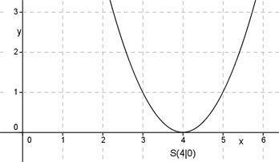

Aufgabe 33 Die Funktion y = (x - d)2 nimmt für x = -1 und x = 9 den gleichen Funktionswert an. Für welches x ist der Funktionswert am kleinsten? f(-1) = f(9) Werte für x einsetzen, dann gleichsetzen: (-1 – d)2 = (9 – d)2 (-1)2 - 2 * (-1) * d + (-d)2 = 81 – 18d + d2 1 + 2d + d2 = 81 – 18d + d2 |-d² 1 + 2d = 81 – 18d |+18d 1 + 20d = 81 | -1 20d = 80 | :20 d = 4 y = (x – 4)2 Dies ist die Scheitelpunktform einer quadratischen Funktion, deren Scheitelpunkt, der Punkt mit dem kleinsten Funktionswert, bei (4|0) liegt. 